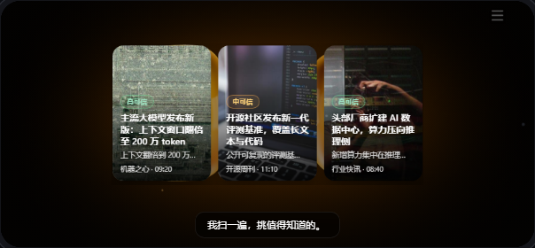
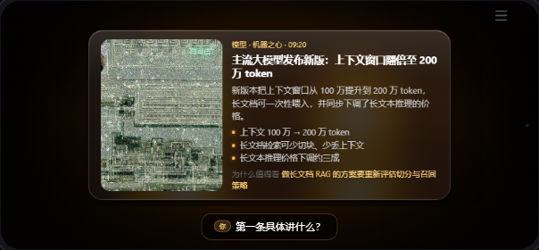
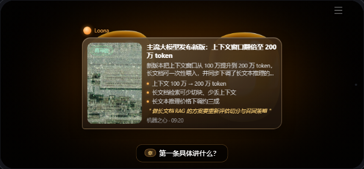
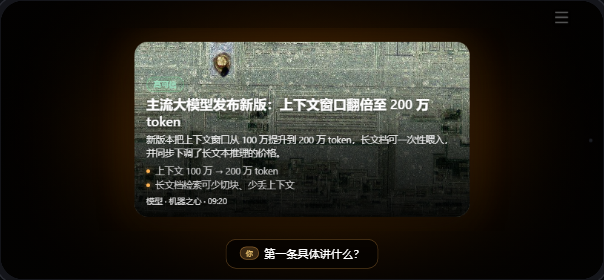
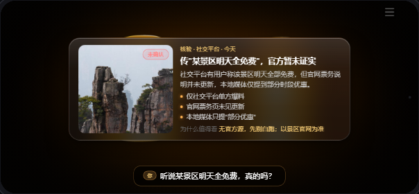
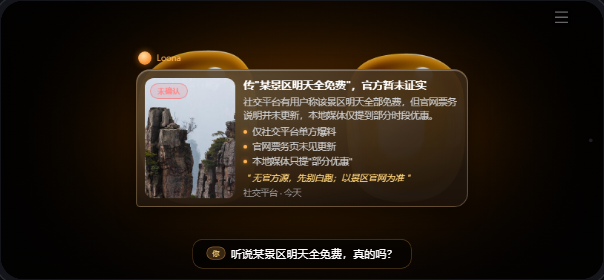
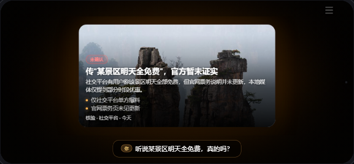

编辑卡 · Editorial Card
glass 皮肤｜缩略图+标题+meta 行；focus 出 hero 大图
对话气泡 · Conversational Bubble
bubble 皮肤｜Loona 把新闻「说」成一串暖凝胶气泡（非卡片）
沉浸聚焦 · Immersive Spotlight
aura 皮肤｜封面横向陈列；focus 出全幅封面，文字压 scrim
① list — 宽问「今天 AI 圈有什么」



② focus — 钻取「第一条具体讲什么」



③ verify — 核验「某景区明天全免费？」→ 强制未确认


